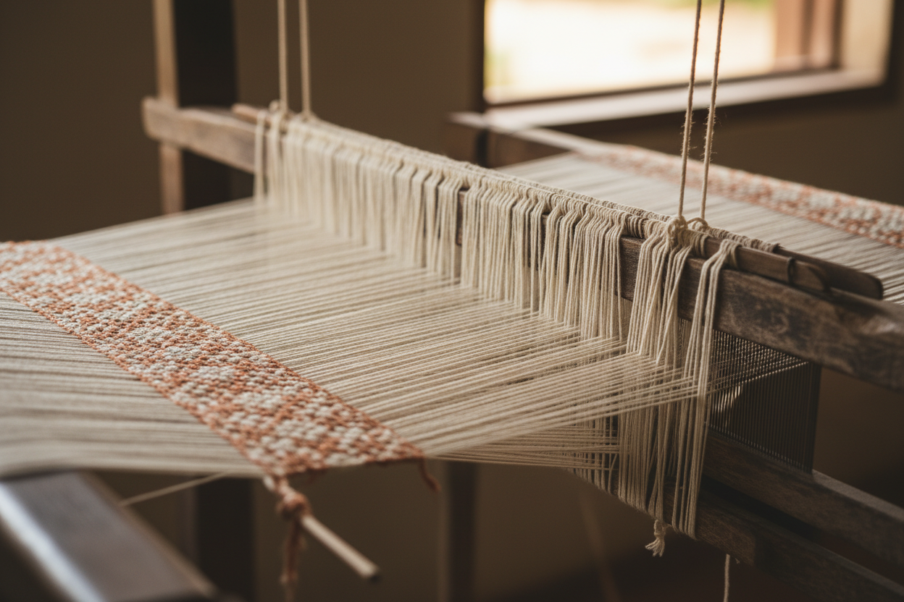
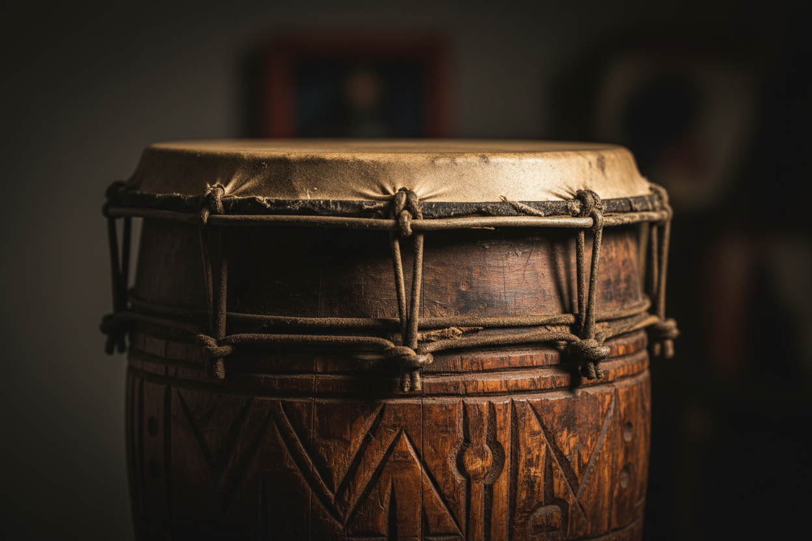
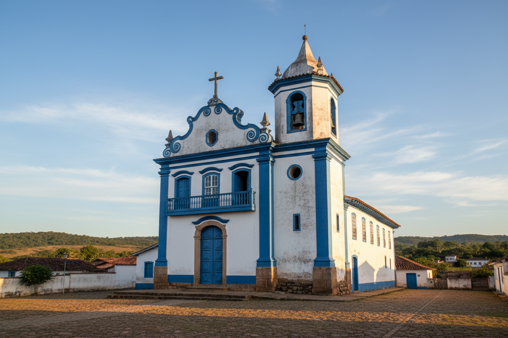
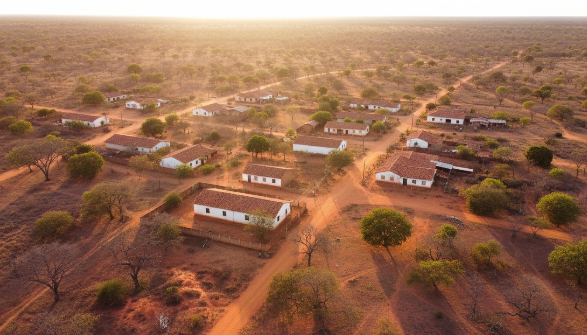
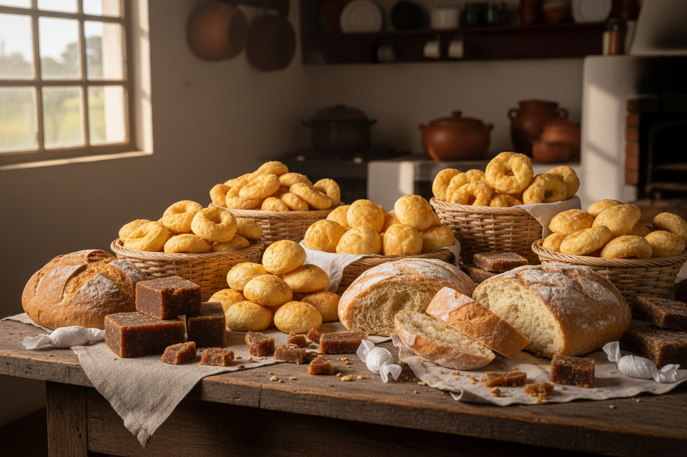
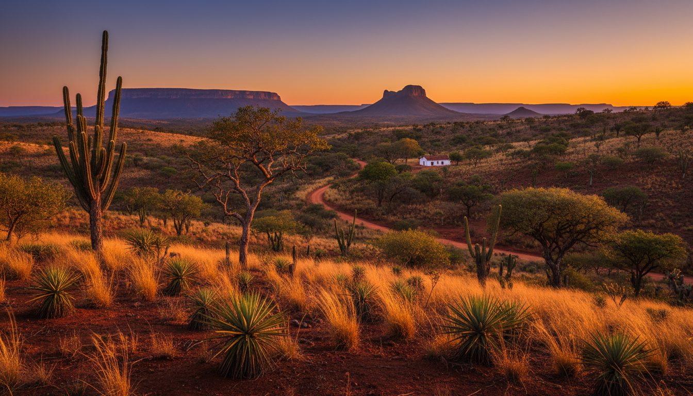

Caminhos por entre tear, tambor e barro. De um dia a cinco — você escolhe a profundidade.

1 dia · 9hRoça Grande · Berilo · Oficina de tear, almoço quilombola, contação de causos.

2 diasCaititu do Meio · Vila Santo Isidoro · Chapada do Norte. Congado, religiosidade e batuque.
Gravatá-Quebra Bateia · Moça Santa. Cestaria com Aneli e cerâmica com Maria Joana.

3 diasChapada do Norte. Patrimônio Imaterial IEPHA — mastro a cavalo, novenas, missa de Reinado.

2 diasRoça Grande · Caititu · Vila Santo Isidoro. Tear, congado e religiosidade nas três comunidades.

1 dia · 9hCórrego do Rocha · Casa da Cida. Café da tarde, fiação, cantos das fiandeiras.
Quilombo · São Pedro do Alagadiço · Santiago. Marujada, agricultura familiar, oração cantada.
Macuco · Pinheiro · Mata Dois. Núcleo originário do quilombo, recepção familiar de Nete e Lica.

5 diasAs 12 comunidades · 3 municípios. Imersão total: tear, congado, palha, barro, marujada, agricultura.
Roteiro B2B para escolas, universidades e empresas. Material didático, contrapartida ESG, certificação.
Desenhamos vivências sob medida — pra famílias, casais, grupos de pesquisa, expedições corporativas.
Falar pelo WhatsApp